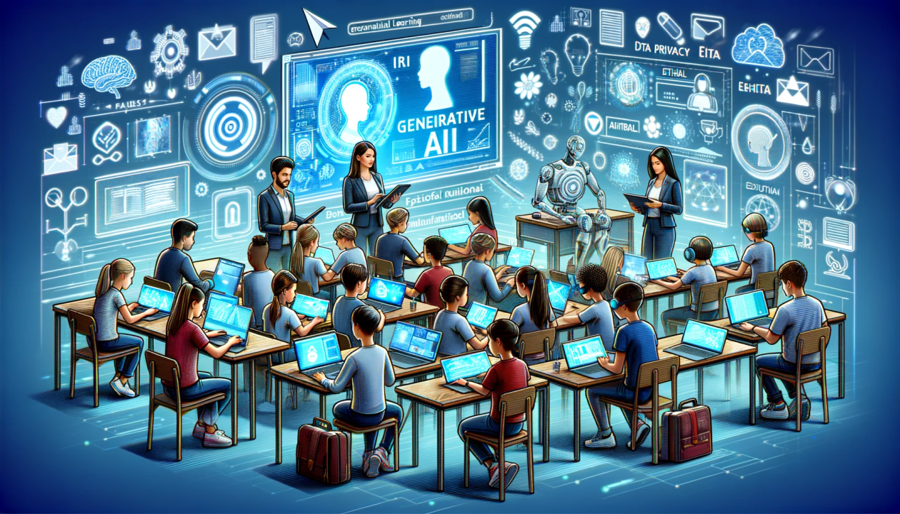

Introdução ao Impacto da IA na Educação Superior
A Inteligência Artificial (IA) emerge como uma força transformadora com o potencial de remodelar fundamentalmente o cenário da educação superior. Sua influência crescente permeia desde a maneira como o conteúdo é entregue até a forma como o aprendizado é avaliado. Compreender as nuances dessa tecnologia e suas implicações no contexto acadêmico é crucial para estudantes, educadores e instituições de ensino.
Este documento visa explorar de forma abrangente as diversas facetas da integração da IA nas faculdades. Analisaremos minuciosamente as vantagens promissoras que essa tecnologia oferece, desde a personalização do ensino até a otimização de processos administrativos. Paralelamente, investigaremos as desvantagens significativas e os desafios éticos, práticos e sociais que acompanham sua implementação.
Explorando as Vantagens da IA no Ambiente Acadêmico
A capacidade da IA de adaptar o aprendizado às necessidades individuais de cada estudante representa uma das suas maiores promessas. Sistemas inteligentes podem rastrear o progresso de um aluno, identificar áreas de dificuldade e oferecer recursos e atividades sob medida, otimizando a experiência educacional e potencializando o sucesso acadêmico.
Além disso, a disponibilidade de chatbots e assistentes virtuais equipados com IA oferece um suporte contínuo aos estudantes. Esses sistemas podem responder a perguntas frequentes, fornecer informações sobre prazos e recursos, e até mesmo auxiliar na resolução de problemas, tudo isso 24 horas por dia, 7 dias por semana.
| Vantagem | Descrição Detalhada |
|---|---|
| Personalização Aprofundada do Aprendizado | Algoritmos de IA analisam detalhadamente o histórico de aprendizado, preferências e ritmo de cada aluno, adaptando o conteúdo, a metodologia e as avaliações para maximizar a compreensão e o engajamento. |
| Suporte Estudantil Inteligente e Contínuo | Chatbots avançados com IA não apenas respondem a dúvidas, mas também podem oferecer orientação sobre planejamento de estudos, recursos acadêmicos e até mesmo suporte emocional inicial, atuando como um primeiro ponto de contato eficiente. |
| Otimização Estratégica de Processos Administrativos | A IA pode revolucionar a gestão acadêmica através da automação de tarefas repetitivas e demoradas, como a triagem de candidaturas, a gestão de matrículas, a organização de horários e a análise de dados para tomada de decisões mais informadas. |
| Análise Preditiva e Melhoria Contínua do Ensino | Ferramentas de IA podem processar grandes conjuntos de dados para identificar padrões de desempenho dos alunos, prever riscos de evasão e fornecer insights valiosos para os educadores ajustarem suas estratégias de ensino e o currículo de forma proativa. |
Desafios e Desvantagens da Implementação da IA no Ensino Superior
Apesar do potencial transformador, a adoção da IA na faculdade não está isenta de desafios significativos. Os custos iniciais de implementação de softwares e hardwares de IA, juntamente com os gastos contínuos de manutenção e atualização, podem representar uma barreira considerável para muitas instituições, especialmente aquelas com recursos limitados.
Ademais, a coleta massiva e o processamento de dados pessoais dos alunos por sistemas de IA levantam sérias preocupações sobre a privacidade e a segurança dessas informações. É crucial garantir que as políticas de proteção de dados sejam robustas e que o uso da IA esteja em conformidade com as regulamentações éticas e legais.
| Desvantagem/Desafio | Descrição Detalhada |
|---|---|
| Elevados Custos de Implementação e Manutenção de Sistemas de IA | A aquisição, integração e manutenção de plataformas de IA sofisticadas exigem investimentos financeiros substanciais, incluindo a necessidade de infraestrutura tecnológica avançada e a contratação de especialistas qualificados. |
| Complexas Questões de Privacidade e Segurança de Dados | A coleta, armazenamento e análise de grandes volumes de dados dos alunos por sistemas de IA aumentam os riscos de violações de privacidade, uso indevido de informações e a necessidade de protocolos de segurança cibernética rigorosos. |
| O Risco de Diminuição da Interação Humana e Desumanização do Ensino | A superdependência de ferramentas de IA pode levar à redução do contato direto e significativo entre professores e alunos, prejudicando o desenvolvimento de habilidades sociais, o senso crítico e a troca de experiências que enriquecem o processo de aprendizado. |
| O Perigo do Viés Algorítmico e da Perpetuação de Injustiças | Se os dados utilizados para treinar os algoritmos de IA contiverem vieses implícitos ou explícitos, os sistemas podem reproduzir e até mesmo amplificar essas desigualdades, levando a resultados injustos ou discriminatórios na avaliação e no direcionamento dos alunos. |